Card games that help researchers refresh their research-methods knowledge. Each game takes one moment in the life of a study: choosing how to answer a question, reviewing a manuscript, and judging a published claim.
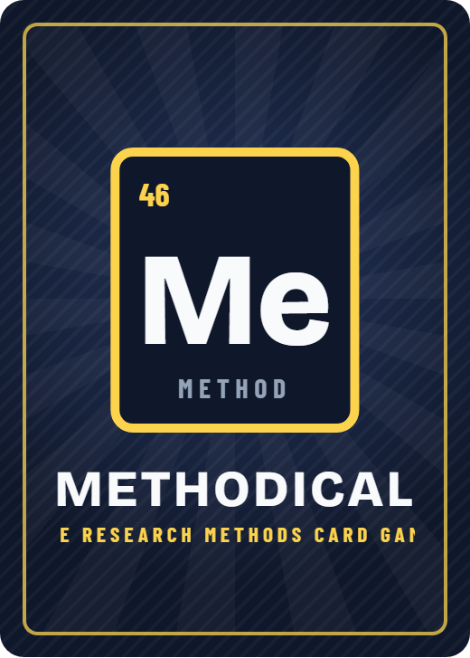
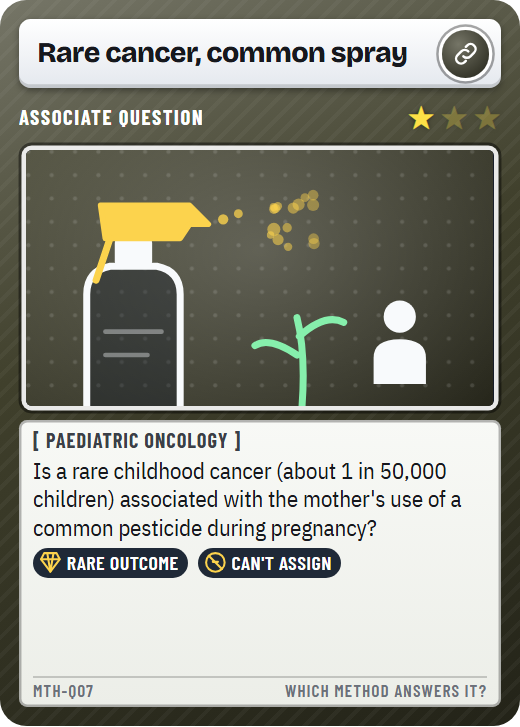
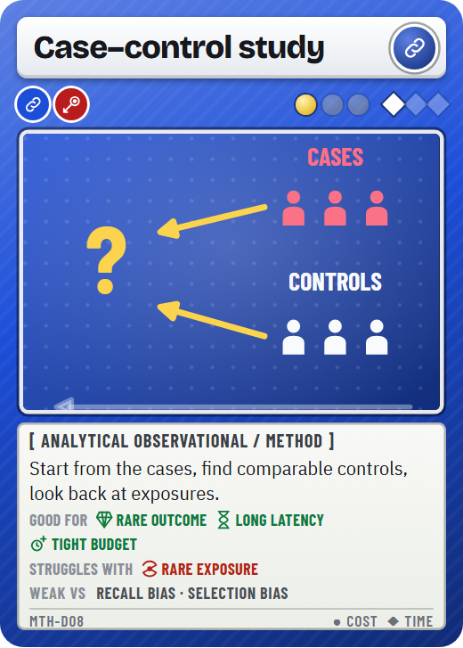
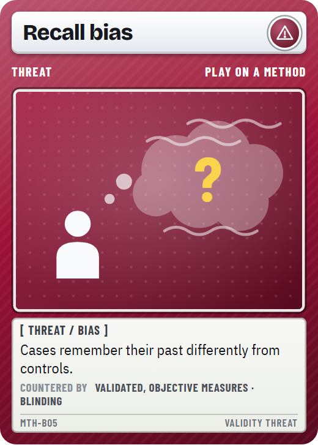
Read a research problem, pick the method that can actually answer it, then defend it when a reviewer attacks it with a bias.
You practise: study designs, their threats to validity and the safeguards against them.
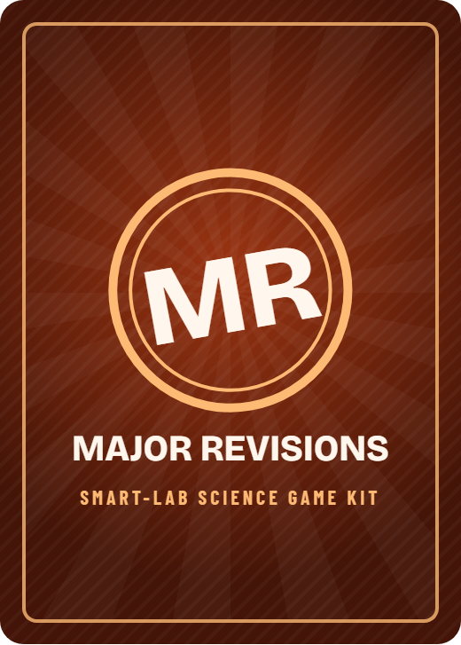
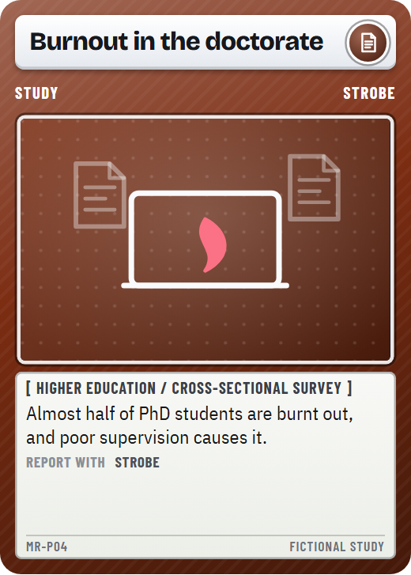
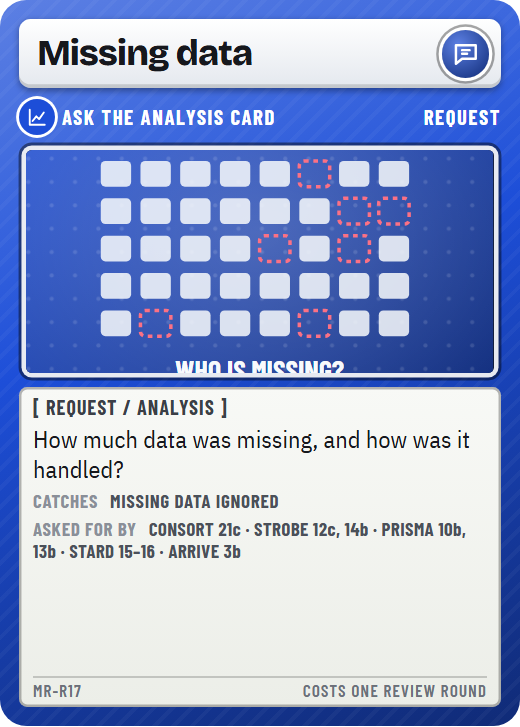
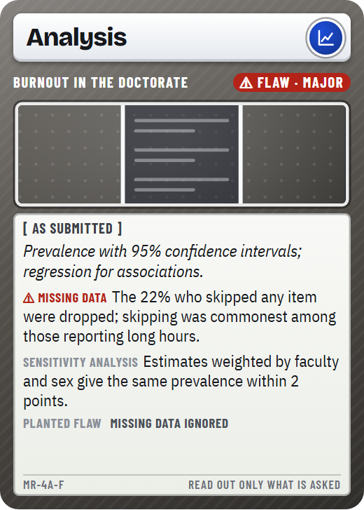
A manuscript arrives with a flaw planted in it. Send the right reviewer requests, find the flaw before your rounds run out, and give the editor's verdict.
You practise: reporting guidelines (CONSORT, STROBE, PRISMA, STARD, COREQ, ARRIVE) and the flaws they catch.
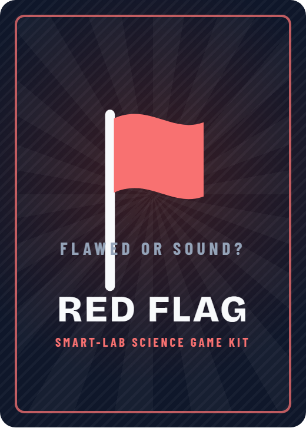
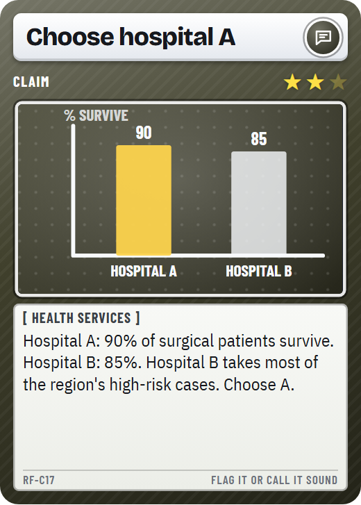
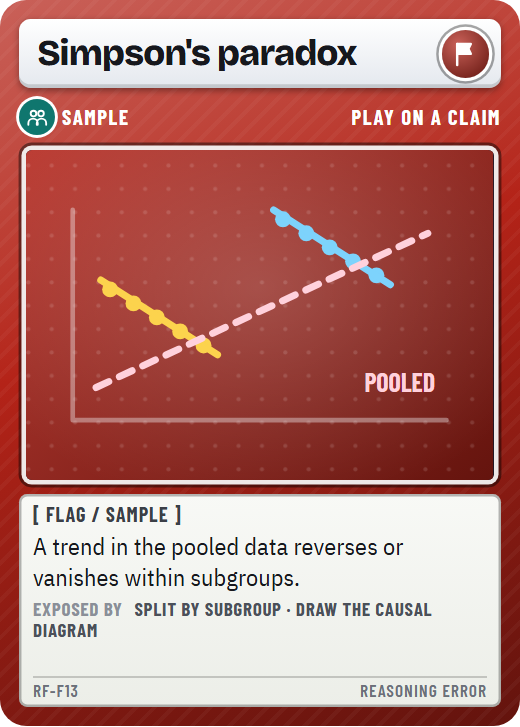
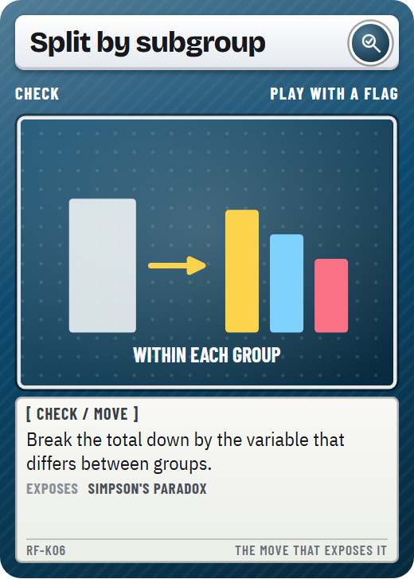
Read a research claim, then flag its reasoning error, or call it sound. Every flag comes with a real historical case.
You practise: confounding, sampling, statistical and publication errors, and the checks that expose them.
All games share the same poker-size card frame, fonts and app. Each has its own colour and card back, so a stray card sorts straight back into its box.
Answer keys have three tiers: best, defensible and trap, each trap with the reason it fails. An unlisted answer can be appealed to the table, because methodologists disagree.
Every concept card names the paper or standard that defines it, and the app opens it with one tap. Real cases are real; invented examples are labelled as such.